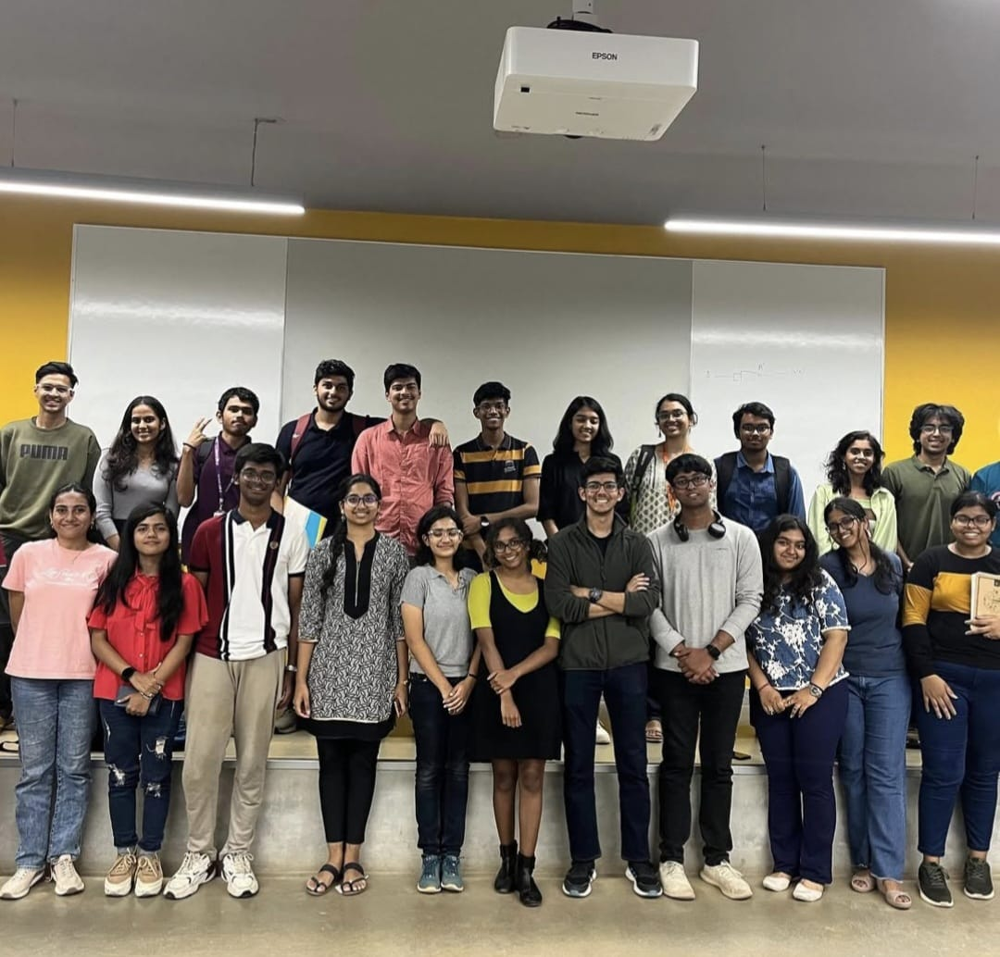
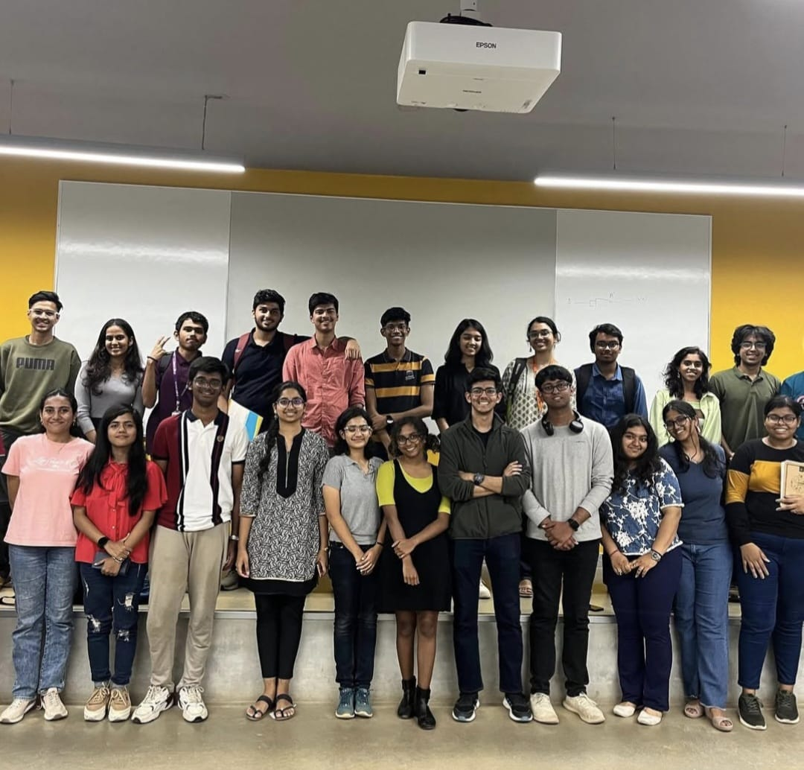

Click on the image for a demo
Hyperspectral Imaging (HSI) for Land Cover Classification
- Capstone Project of GAIP internship (National University of Singapore)
- Used Indian Pines & Salinas datasets
- Applied 3D CNN and ResNet models
- Achieved 99% classification accuracy
- Focused on spectral band preprocessing, dimensionality reduction, and model evaluation
- Highest scoring team project in the batch
- Unprecedented accuracy in the past 8 years of GAIP
Technologies: Python, TensorFlow, Deep Learning, Remote Sensing
Static YouTube Homepage Clone
- Static clone of YouTube homepage using HTML and CSS
- Responsive design using Flexbox and Grid
- Interactive elements with hover effects and tooltips
- Modular CSS structure for maintainable code
Technologies: HTML5, CSS3, Responsive Design
Amazon E-Commerce Clone
- Full-featured e-commerce interface with product browsing and cart management
- Dynamic cart updates with quantity adjustment and item removal
- Checkout flow with delivery options and real-time price calculations
- Persistent user data using Local Storage API
Technologies: JavaScript, DOM Manipulation, Local Storage API
Flip - Book Review Web Application
June 2025 - July 2025 | 30 days
- Developed a React-based web app for reading, reviewing, and liking book reviews
- Integrated Google Books API to fetch book details and display top-reviewed books
- Implemented mock user authentication flow with login functionality
- Persisted user reviews and likes locally using localStorage for a seamless experience
- Designed responsive, user-friendly UI with intuitive navigation and clean layout
Technologies: React, React Router, Google Books API, JavaScript, HTML, CSS
Movie Recommendation System (NextWatch)
- Content-based filtering system using cosine similarity
- User inputs favorite movie, system returns similar recommendations
- Refined output from top 50 to top 30 based on user feedback
- Designed and implemented UI using Streamlit
Technologies: Python, Streamlit, Recommendation Systems
OCR for Indian Regional Languages
- Developed CNN architecture for recognizing handwritten numerals
- Datasets included Urdu (Kaggle dataset) and other regional Indian language datasets
- Implemented preprocessing pipeline with Gaussian blur and Otsu's thresholding
- Deep CNN architecture with multiple convolutional layers and strategic pooling
Technologies: Python, TensorFlow, Computer Vision, OCR
Blender Donut Animation
- 10-second 3D animation clip created in Blender
- Designed donuts from scratch starting with torus mesh
- Added detailed glazing and sprinkles
- Used Poliigon assets for background elements
- 180 frames rendered at 24fps (~3 days render time)
Tools: Blender, Poliigon, 3D Modeling

 
